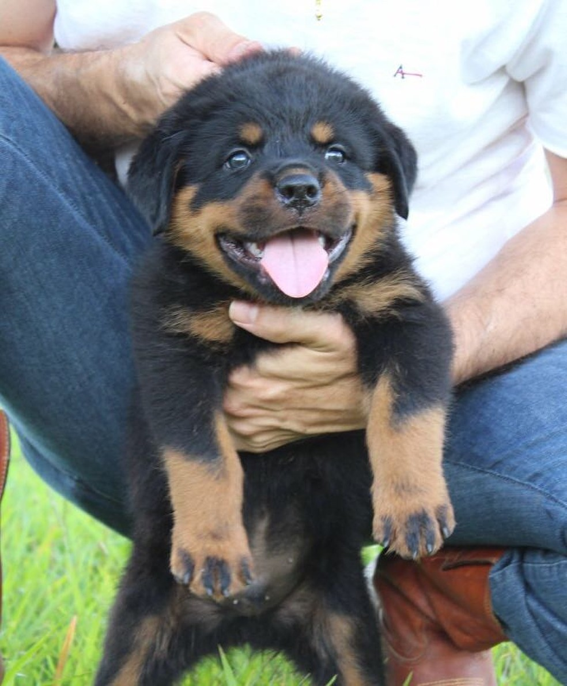
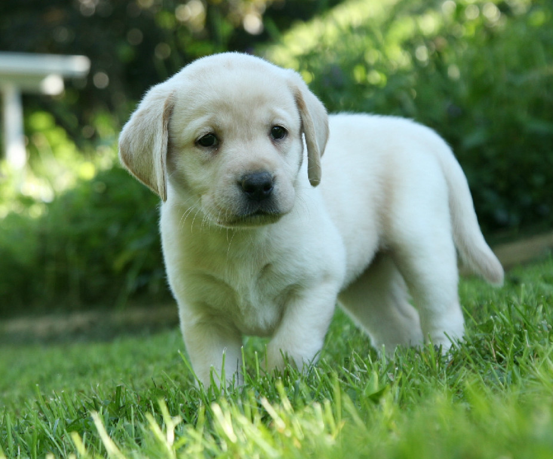
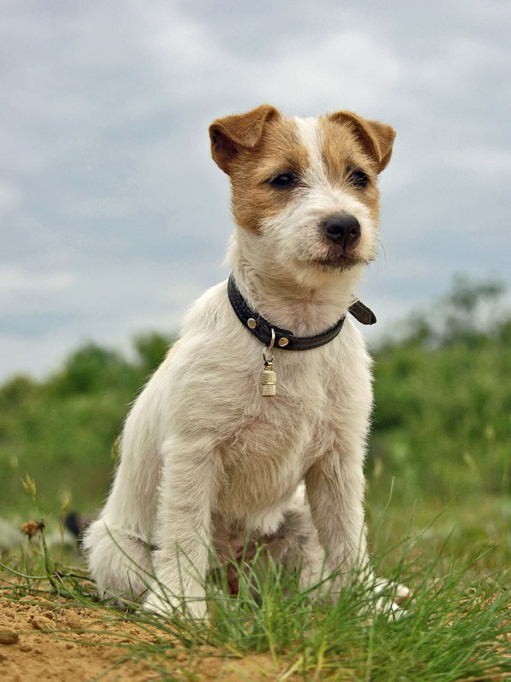

Adoção

- 
- 
- 
Jorge
Características
Este cão dá a impressão de grande força mesmo em um corpo pequeno. Seu corpo é curto e longo, ao mesmo tempo forte e robusto. As pernas, que são curtas, grossas e poderosas.
- Raça: Welsh Corgi / Macho
- Idade: 1 ano
- Peso: 12kg
- Altura: 30cm'
Personalidade
O temperamento desses cães é semelhante ao do welsh corgi cardigan. Esses animais são ativos, inteligentes e guardiões. Eles são geralmente amigáveis e muito leais à sua família, mas eles não estão entre as raças de cães mais sociáveis.Os Pembroke tendem a ser reservados com estranhos e agressivos com desconhecidos. Portanto, é muito importante socializar esses cães desde cedo para evitar problemas de agressividade e timidez na idade adulta.
Juracy
Características
Talvez a caraterística mais marcante do Rottweiler seja a sua cabeça larga e de comprimento médio, que conta com um focinho poderoso que não é nem curto nem comprido em relação ao cranio. A mordedura em tesoura alcança todo o seu poder graças às fortes e grandes mandíbulas deste cachorro.
- Raça: Rottweiler / Macho
- Idade: 3 meses
- Peso: 1kg
- Altura: 12cm'
Personalidade
Atento, obediente, calmo, corajoso, seguro, confiável e leal com os seus. Assim se pode descrever o caráter típico do Rottweiler. Por conseguinte, deve ter em conta que nem todos os Rottweilers têm esse caráter.É assim que o Rottweiler se destacou no passado e continua nos dias de hoje, como uma das raças mais versáteis e inteligentes.
Juremir
Características
O Labrador Retriver é um cachorro de tamanho médio, com corpo musculado, forte e compacto. O seu peito é largo e profundo e, as costas são retas. Este cachorro é ligeiramente mais comprido que alto. A cabeça do Labrador Retriever é larga e apresenta um focinho comprido e largo. A raça apresenta uma mordida em tesoura e as mandíbulas são fortes.
- Raça: Labrador / Macho
- Idade: 8 meses
- Peso: 2kg
- Altura: 16cm'
Personalidade
Uma das caraterísticas mais notáveis do Labrador Retriever é o seu caráter. Devido à sua aparência amigável e o seu caráter excepcionalmente sociável, esta raça canina foi a mais popular do mundo por mais de uma década. Além disso, a estabilidade de caráter destes cachorros converteu-os em grandes parceiros da humanidade, colaborando como cachorros de resgaste, cachorros de terapia, cachorros de assistência e muito mais.O Labrador Retriever é sociável, amigável, leal, inteligente e amante da diversão.
Jurabullet
Características
De acordo com o padrão oficial da raça, o Jack Russell Terrier deve ser mais comprido que alto, sendo a altura ideal até à cruz de 25-30 cm e o peso entre os 5 e os 6 kg. Assim, as principais caraterísticas que nos permitirão distinguir o Jack Russell do Parson Russell, são as suas patas curtas e tronco ligeiramente alongado.
- Raça: Jack Terrier / Macho
- Idade: 2 anos
- Peso: 8kg
- Altura: 25cm'
Personalidade
No geral, se formos constantes na sua educação, coerentes e fizermos uso do reforço positivo desde filhote, o Jack Russell é raro adotar um mau comportamento. Desta forma, se realizarmos os passeios mínimos estabelecidos nunca mais fará as suas necessidades dentro de casa, à exceção das primeiras vezes em que se encontrar no período de aprendizagem. Também não é cão destruidor, com vontade de morder os móveis ou outros objetos se lhe proporcionarmos brinquedos mordedores para quando precisar de brincar ou aliviar a dor causada pelo crescimento dos dentes.E, ao ser tão excitado, ativo, energético e temperamental.